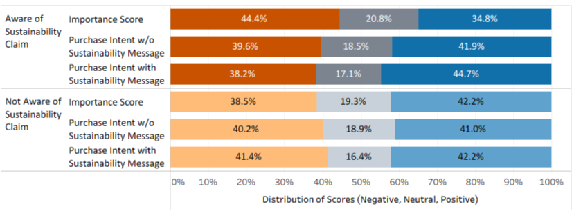

CX Retail Study
A national retailer is considering adding sustainability messaging (e.g., “Eco-Friendly Packaging”) to one of its private-label products. The marketing team wanted to understand whether this messaging will influence purchase intent and brand perception. The Consumer Experience Analyst was tasked with evaluating the potential impact of sustainability messaging on shopper behavior and recommending the next steps.
Approach and Data Analysis Phases
- Explore: ask questions to understand the business challenge and objectives
- Prepare: generate, collect, store, and manage data
- Process: cleaning, organize, and protect data to ensure integrity
- Analyze: explore, visualize, and interpret data
- Act: share findings and use insights to solve the problem
- Monitor: track the performance of the implemented solution
Explore Phase
During this phase we explored questions related to generating new customers or transitioning existing customers. Is there a possibility the new eco-label could entirely replace the existing private-label brand? Was the current brand underperforming in terms of meeting sales targets? Was there existing data on the competitor eco-friendly brands? This information would help us better frame our questions for the survey data we sought to collect.
Prepare Phase
We built surveys to collect data on consumer perceptions and behavior related to sustainability messaging. The surveys were distributed to a sample of the retailer’s customers, and the data was collected and stored securely for analysis.
Process Phase
We cleaned the survey data to ensure accuracy and consistency. We also discovered and cleaned interaction data around sales trends on competitor products to expand our scope of the current state. This involved checking for missing values, outliers, and ensuring that the data was properly formatted for analysis.
Analyze Phase
We first assessed respondents' awareness of sustainability claims, perceived importance of sustainability in household products, and purchase intent with and without sustainability messaging. The second survey evaluated behavior as a concept test where respondents were shown one of two packaging mock-ups: either with sustainability messaging or without, and were asked to rate their appeal, trust, and likelihood to purchase.
To understand participants’ perceptions, we aimed to answer the following questions:
- Does awareness of sustainability claims influence how important sustainability is when considering which cleaning products you purchase?
- Does awareness of sustainability claims affect the intent to purchase a cleaning product with or without a sustainability message?
- Is there a correlation or association between awareness of sustainability claims, the importance of sustainability, and the intent to purchase?
If correlations or associations exist, are they strong enough to be meaningful? To understand participants’ behavior, we explored: Does appeal, trust, or likelihood to purchase increase significantly when participants are shown a product mock-up with a sustainability message compared to one without? Is there a correlation or association between the presence of a sustainability message, appeal, trust, and likelihood to purchase?
If correlations or associations exist, are they strong enough to be meaningful?
During data processing, the 5-point Likert scale ratings from the perception study were grouped into three categories:
- Scores of 1–2 = Negative
- Scores of 3 = Neutral
- Scores of 4–5 = Positive
The same method was applied to the behavior study, where the 10-point Likert scare ratings were categorized as:
- Scores of 1–4 = Negative
- Scores of 5–6 = Neutral
- Scores of 7–10 = Positive
The below chart showsthe results of the frequency distribution of importance and purchase intent by awareness of sustainability claims. The results show that the percent of positive responses across all factors were similar between respondents who were aware or not aware of sustainability claims, ranging from 34.8% to 44.7%. Notably, the proportion of positive responses was comparable to the negative responses across variables between the awareness groups.

The below chart displays the distribution of scores per question in the behavioral survey. As observed in the perception survey, a similar proportion of positive response was received for appeal, likelihood to purchase, and trust, across respondents who were shown a label with a sustainability message and those who were shown a label without a sustainability message.

| Study | Dependent Variable a | Odds Ratio b | 95% confidence interval b | p-value c |
|---|---|---|---|---|
| Perception Study Question: Is awareness of sustainability claims significantly associated with importance and intent to purchase? | Importance | 0.76 | 0.56 to 1.03 | 0.08 |
| Intent to purchase with sustainability message | 1.12 | 0.83 to 1.53 | 0.46 | |
| Intent to purchase with no sustainability message | 1.03 | 0.76 to 1.53 | 0.85 | |
| Behavioral Study Question: Is sustainability messaging on labels significantly associated with appeal, likelihood to purchase, and trust? | Appeal | 1.02 | 0.75 to 1.37 | 0.92 |
| Trust | 0.85 | 0.63 to 1.14 | 0.27 | |
| Likelihood to purchase | 1.10 | 0.82 to 1.49 | 0.52 |
Act Phase
The results of the survey data analysis indicate that purchase intent may not simply be influenced by awareness of sustainability or having messaging on the label. These findings, coupled with evidence from industry research, suggest that the effectiveness of sustainability marketing depends on understanding attitude and behavioral differences within consumer groups.
While broad, one-size-fits-all messaging may appear appealing; it is unlikely to shift behavior meaningfully. Instead, success lies in identifying which consumer segments are most receptive and tailoring messages that align with their motivations and trust drivers.
Our findings highlight the importance of gathering more granular data from consumers regarding their perceptions, understanding, and motivations for purchasing sustainable or eco-friendly cleaning products. Future studies should include measures of trust, importance, and likelihood to purchase alongside segmentation and demographic data to determine which variables best predict purchasing intent.
Such an approach would allow the retailer to:
- Confirm whether industry research findings are generalizable to its own customer base.
- Refine or redefine consumer segments as needed.
- Develop targeted sustainability marketing strategies designed to drive measurable profit gains.
Key Learnings
In short, while the current analysis did not uncover strong statistical relationships, it provides directional evidence and strategic clarity. After the next round of data collection and analysis, the path forward is to test insights in a pilot study, where targeted sustainability messaging can be applied, measured, and optimized for the segments most likely to respond. The findings from the pilot study should help establish realistic KPIs to measure progress in closing the average $70K sales gap between the private label and national brand.